Case Study
Background
I love trying out new recipes, but I hate wasting food. Time and time again, I found myself buying obscure ingredients for a new recipe, only to be left puzzling over what to do with half a pound of dried shiitake mushrooms and ricotta cheese. This was the inspiration behind Pairings, a web-based cooking application that allows users to search for recipes based on the ingredients they already have. Pairings was one of my first independent design projects. This is a case study on the design process I followed throughout the project.
THE PROBLEM: STANDING OUT IN A CROWD
When I talk to my friends who use cooking apps, they always reply with “Oh I’ve tried a few but stopped using them because XYZ...there’s SO many out there though.” In such a fragmented and saturated market, I knew that my design needed to solve a specific user problem and that the interface needed to be clean and easy-to-use for repeat users.
THE SOLUTION: USER-CENTRIC INFORMATION ARCHITECTURE
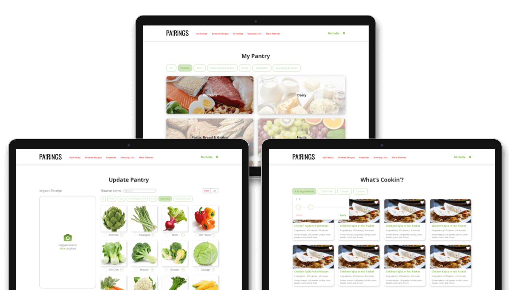Pairing’s simple user interface lets the images do the talking. The concept is fairly straightforward (search for recipes based on items in your pantry), but the narrow product focus clearly solves the needs of its users, rather than trying to serve all corners of the home cooking market. The information architecture here is key to the user experience—which pantry categories are shown and the order in which they are shown, how ingredients are displayed and how they are grouped, how recipes are displayed.
Click here to view a working prototype of Pairings!
THE PROCESS: INTENTIONAL AND SOLUTION-DRIVEN DESIGN
Competitive Analysis
Before jumping into design, I conducted a competitive analysis of a few cooking applications on the market—there are a TON out there. In particular, I looked at BigOven, Paprika, and Yummly.
- BigOven’s slogan is “Cooking simplified.” It has 350,000 proprietary recipes and also acts as a grocery list compiler and menu planner (for pro customers that pay 2.99/month or 24.99/annually). A nice feature is the advanced search, which allows users to filter by cook time, ingredients, and dietary restrictions. The UX is clean but the site is slow to load and the grocery list feature, while allowing users to import recipes, leaves a lot to be desired, as it doesn’t automatically combine ingredients. Another limiting factor is that the recipes are limited to those by BigOven.
- Paprika allows users to make grocery lists and plan meals. A unique feature is that Paprika allows you to enter in custom recipes and import recipes from anywhere on the web using the in-app browser. The app seems targeted towards users who are more familiar with cooking and want access to a variety of recipes. Paprika also allows users to scale ingredients and combine duplicate ingredients across recipes when compiling shopping lists. Paprika is $4.99 and available on iOS, Android, Kindle, and Mac and Windows, but is not available in browser, which can be annoying when accessing from a different device.
- Yummly is all about the recipes. The app pulls from various recipe sites, food blogs, and a collection of in-house recipes, providing access to over one million recipes. The platform appears to be targeted to the tech-savvy frequent home cook—they have a sleek interface and provide personalized recommendations based off the user’s past favorites. While you can’t make grocery lists or meal plans, you can favorite recipes by category. The more a user uses the app and favorites recipes, the more Yummly is able to provide curated recommendations. However, the sheer volume of recipes can be overwhelming. The platform is free to use and is available in the web browser, iOS, and Android.
From this research, I concluded that the cooking application market is extremely fragmented and there are a ton of players. However, the ones that seem able to stand out the most and succeed are the ones that take a niche aspect and really focus on it. Unique features are important in this market. The ones that try to wear too many hats and are more “generic” fade into the background.
Product Scope and Goal Setting
Initially, I wanted to create an application that allows users to look up recipes by time to make / cuisine / number of ingredients, adjust portion sizes, make grocery shopping lists, import recipes from external sources, and see nutritional facts. The idea was to try to simplify the cooking experience for beginner chefs, people who are in a hurry, and people who want to explore new recipes and stay organized. However, based on my research of the cooking application market, I knew that it was really important for me to pull back, focus on one defining feature, and create a cohesive story for my product.
The refined scope was to design and create a cooking application that allows users to search for recipes based on the ingredients they already have. No more wasted ingredients or accidentally purchasing spices you already own. No more spending hours researching the perfect recipe and realizing that you have to spend another hour going to the store. This was something that I thought would be useful to users and also interesting and challenging to create.
User Research
In order to better understand potential users and how to best meet their needs, I wrote and fielded a survey, which reached 33 responses.
Based on the survey results, I discovered that:
- Most respondents cook multiple times a week and are fairly familiar with cooking. They typically cook for themselves or one additional person. Pain points with the process include that cooking takes too long, they don’t know what recipes to make, and that it’s hard to cook for just one person.
- ~80% of respondents look to websites and food blogs for new recipes. The two most important selection criteria are cooking time and what ingredients they already have on hand.
- Respondents use a variety of devices, including mobile devices, laptops, tablets, and pen and paper—a responsive solution across devices will be best for this application.
- Respondents skew younger, most being under 35, and are mostly working full-time or are students.
Click here to see detailed survey results and a copy of the survey document.
User Stories, Flows, and Sitemap
I created user stories and diagrammed user flows based on a list of tasks for different user types to complete.
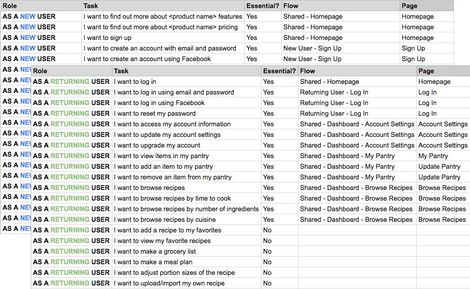 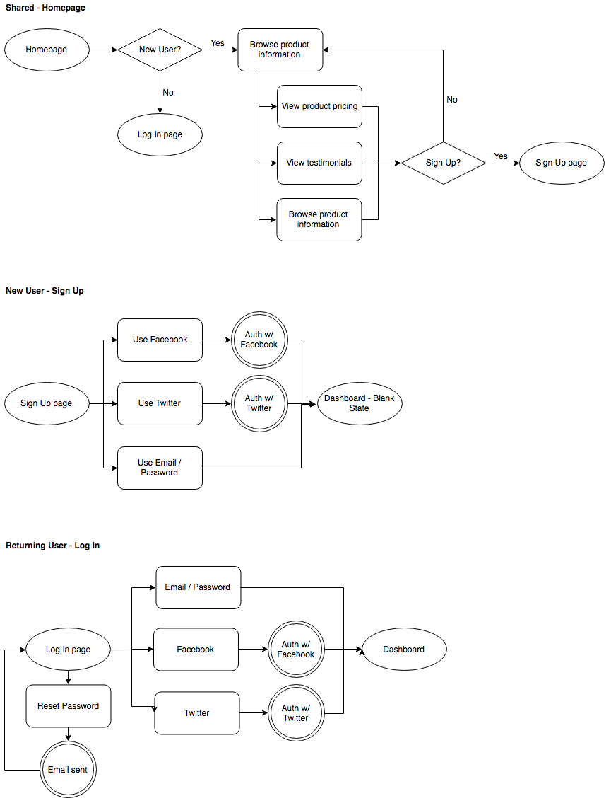
From there, I created a quick sitemap in myBalsamiq to help layout the pages I needed to create.
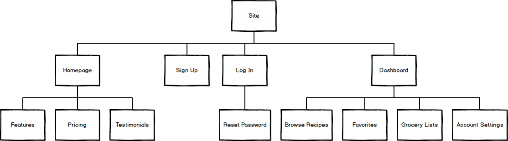Wireframing and Prototyping
I started off with some hand drawn wireframes, which I translated into low-fidelity wireframes using Sketch.
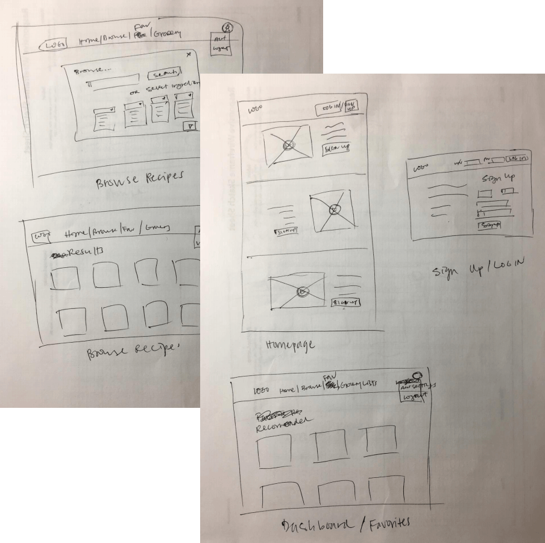 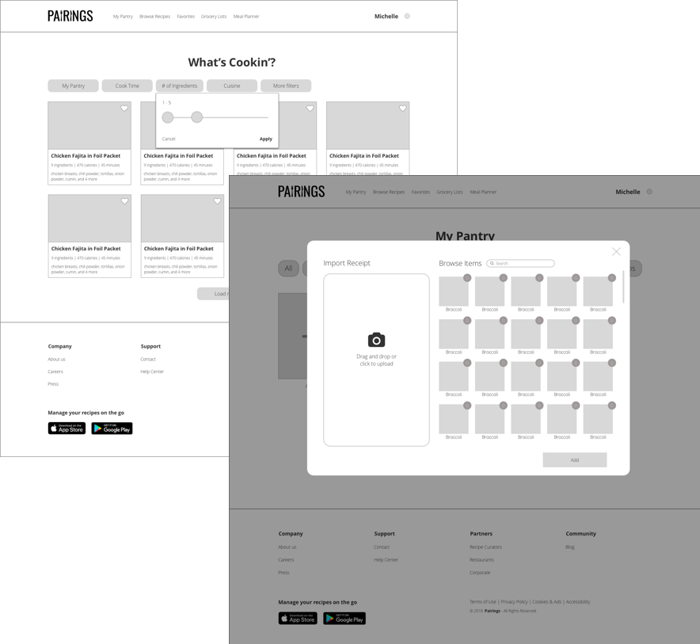Using the lo-fi wireframes, I created a prototype using InVision to test my designs with users.
User Testing
Through UserTesting.com, I tested my prototype with three users. The feedback I received was really insightful to making my designs more intuitive and user-friendly, including adding more description on the homepage of what the product actually does so users can be aware of features before they sign up, and adding options for gluten-free and paleo eaters.
Click here for detailed recordings of the testing process.
Branding & Logo Design
To get some quick ideas for a product name and logo design, I laid out a quick mind map for terms associated with cooking:
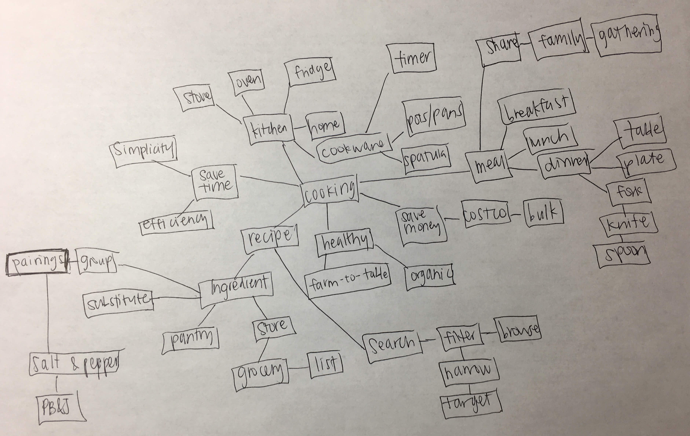The word “Pairings” really stood out to me, and I drew up some logo sketches playing around with the shapes of the letters and eating utensils.
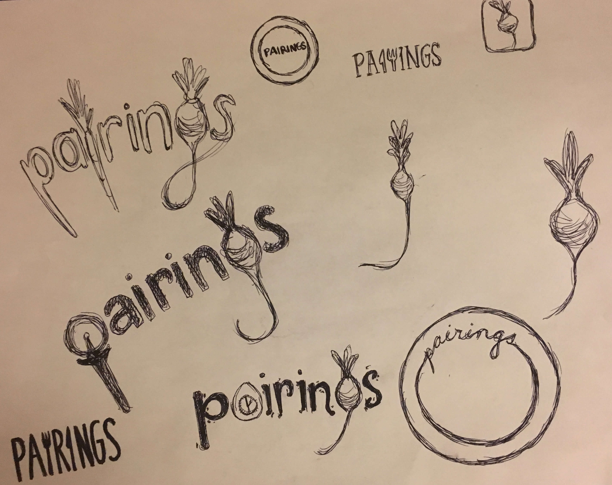Some initial feedback was that the term “Pairings” might be too closely associated with wine and cheese pairings, so I ran a quick user test in Usability Hub to see if the application name would be confusing.
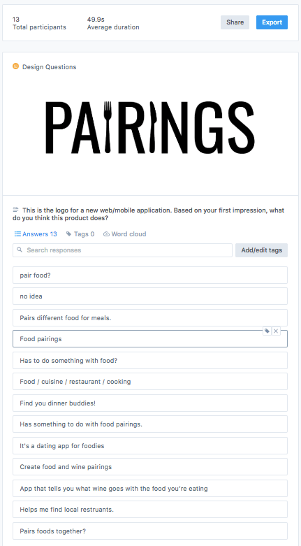There were mixed responses from users, ranging from dating app for foodies to coordinating dinner dates to wine pairings to pairing ingredients for menu items. Wine was actually only mentioned 2 out of 13 times, which was less than what I expected. The fork and knife in the logo help gear the concept away from wine and towards food and dining.
While the results were inconclusive at best, I took that as a result in itself—I decided to run with the name Pairings, keeping in mind that the product will likely need good framing and an introductory explanation to indicate that it’s food / cooking-related.
Style Guide
I put together a comprehensive style guide to use as a foundation for my high-fidelity mockups, including logo, typography, color palette, and button / form definitions.
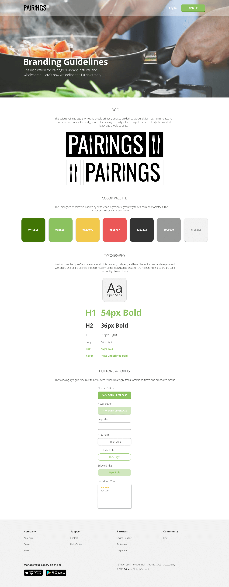The brand concept is pairings. The concept idea stems from being able to search for recipes by a basket of ingredients and finding out what pairs well together and what final products can be produced. There are always multiple options of pairings, it just depends what combination you seek.
Since so much of cooking is about the visual and I knew I would be including many colorful images of food and ingredients, I wanted to stick to simple, fresh, vibrant colors that would complement those images and remind people of food.
High-fidelity Mockups
After defining the style guide, it was time to move onto design! This was an extremely iterative process and I played around with multiple options for the pantry dashboard before settling on the final version.
Some design decisions I incorporated during this final phase:
-
The option to toggle between icon view and list view when users add items. This allows users to select which option they prefer—some users may be overwhelmed by too many icons
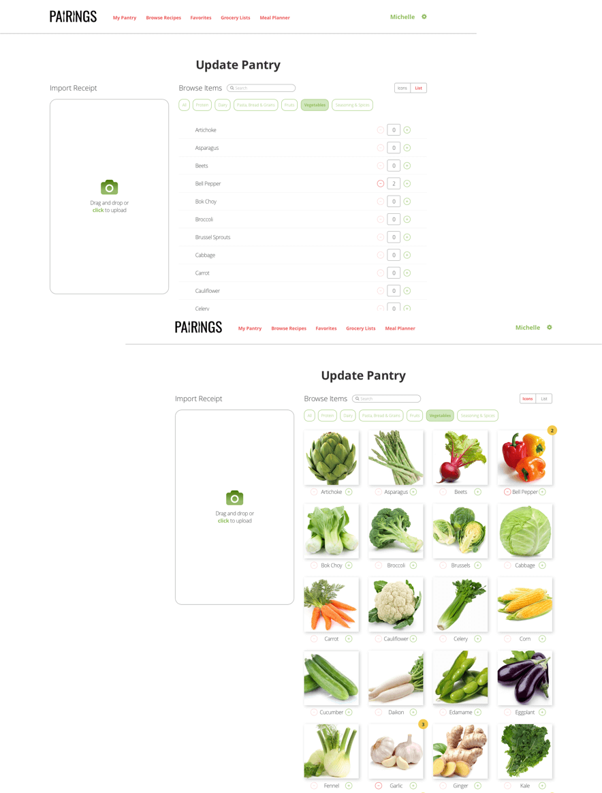 -
Updating the homepage design to have clearer indications of product features and adding a third pricing tier
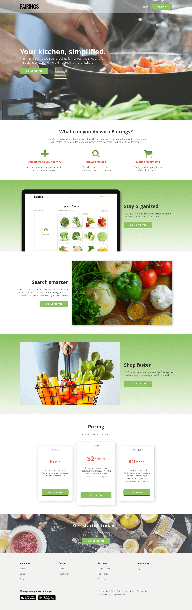 -
Adding a task to the sign on flow where users select their “Recipe Profile”
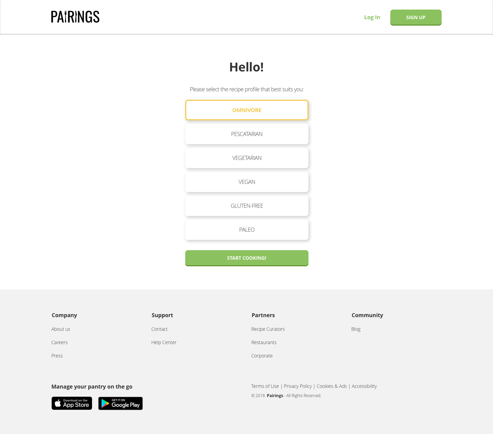
Click here to view a working prototype of Pairings!
Conclusion
This was a fun and challenging project to design. There were many elements that I had to think through and test multiple times that I hadn’t anticipated, like the updating ingredients flow and sorting by pantry category. While I tried to design in a way to minimize the learning curve, it’s a fairly complex product to use, and one that probably requires some level of initial learning from the user.
Through this process, I realized that information architecture is KEY to the success of a design, especially when working with a product that has large amounts of data that can be grouped in different ways. It was very challenging to think about this aspect—what categories to show, how to organize the information (alphabetically, grouped, etc.). This is definitely an area that I want to explore further when I revisit this project. I would also like to spend more time refining and building out the mockups for other features, like the recipe uploader and being able to mark a recipe as completed and have those ingredients automatically subtracted from the pantry instead of the user manually deleting used items.